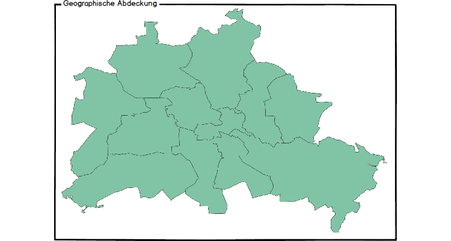
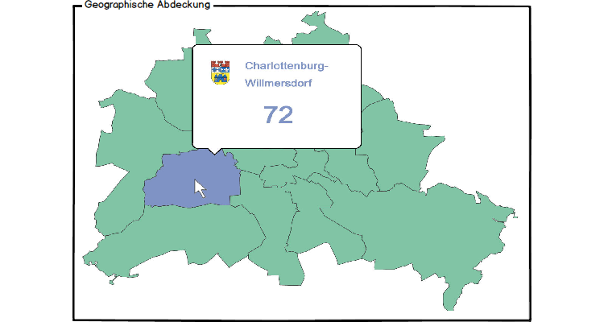
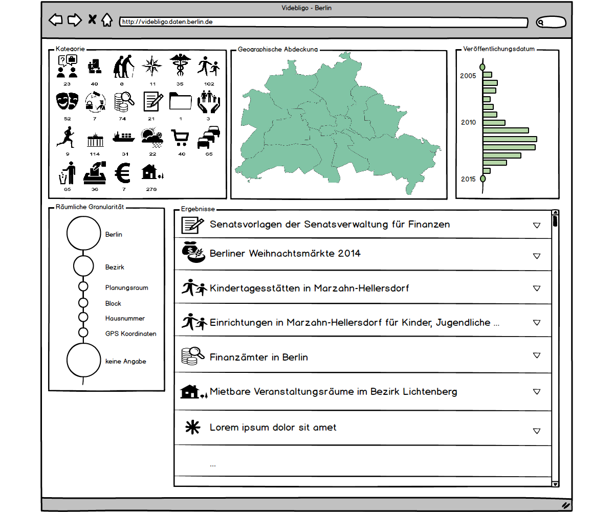

- Unsere Ressourcen - Das Problem
- Unsere Auswahl an Metadaten
- Wie visualisieren wir?
- Wie funktioniert es?
- Wir gehen tiefer - Architektur
- Ein Demonstrator
Das Problem
Unsere Auswahl
Gruppiert
Piktogramme


Karte



Diagramme

Granularität

Gesamtpaket

Architektur

Diagrammfilterung Beispiel
Some chart